(b)
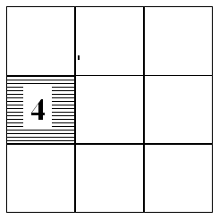
(b)
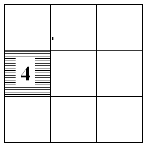The apparently worse performance of more realistic-looking and more detailed forecasts compared to smoother, less realistic forecasts is considered from an number of viewpoints. The classic "double penalty" explanation is considered first in both a continuous error measure (RMS) frame and then in a categorical error frame. Finally we caution against relying on RMS alone, as one may "hedge" to reduce this by smoothing forecasts (or using lower resolution models) which have unrealistic forecast variance.
Double Penalty (continuous case)
The normal explanation of why higher resolution models can
verify worse than smoother lower resolution models is because of
the double penalty. At it's simplest this arises when an observed
small scale feature is more realistically forecast but is
misplaced. The higher resolution model is penalised twice; once for
missing the actual feature and again for forecasting it where it
isn't. For example, consider a step feature (ie a rain area) of
amplitude 1 (a). (It is assumed to be at least 4 grid points wide
so that a model may potentially resolve it.) The higher resolution
model forecasts the correct amplitude but located at the adjacent
area (b), whereas the lower resolution model forecasts a constant
of k (0 <= k <= 1) for both areas
(c). The RMS error is lower for the coarser model, even though it
has not the correct amplitude or variance unlike the higher
resolution forecast.
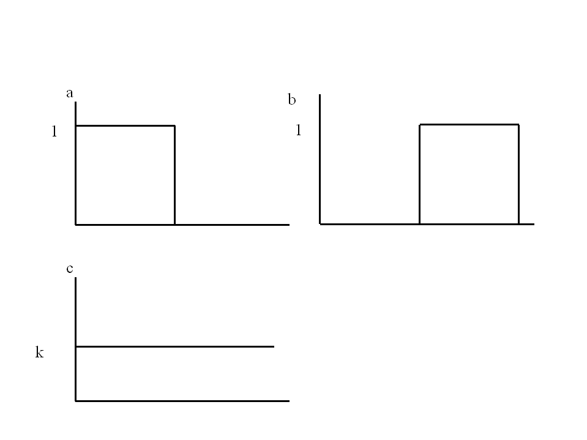
| High resolution (b) | Low resolution (c) |
|||
| Forecast amplitude | (0,1) | k=0 | k=½ | k=1 |
| Error (absolute) | 2*1 | 1 | 2*½ | 1 |
| RMSE | 1 | 1/sqrt(2) | ½ | 1/sqrt(2) |
| Forecast variance | ¼ | 0 | 0 | 0 |
| Correlation with observed | -1 | 0 | 0 | 0 |
Another way of saying this is that if a feature is misplaced by
order of its size or more then the double penalty will apply in
full. This is especially true of narrow features such as rainbands
or convective squall lines etc. However from a value point of view
the higher resolution forecast is potentially more useful in that
it at least has the correct intensity albeit without the accurate
location.
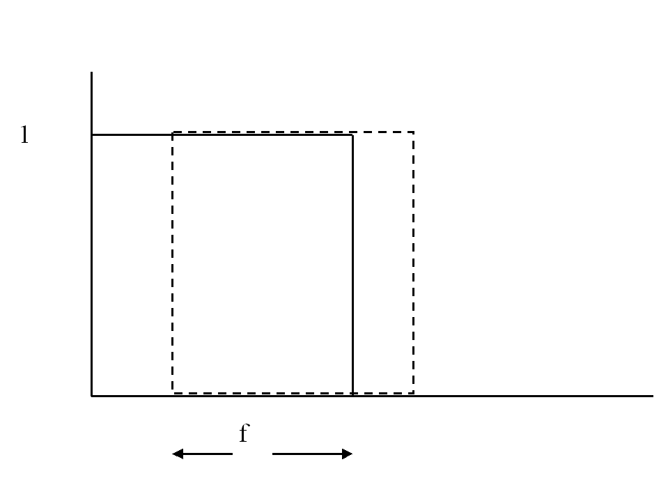
Consider now a less severe misplacement, with a fraction f
in common with the "observed" feature. The double penalty
contribution to the absolute error is now 2*(1-f)/2, the
RMS error is sqrt(1-f) and the correlation with the
observed is 2f-1. If the common fraction is greater than
3/4 the higher resolution forecasts will have a lower RMS error
than the minimum RMS error of a constant low resolution forecast
(of 1/2 everywhere). In wave terms this is a phase error of p /4 or
less. See below for a discussion of the double penalty in
categorical verification.
A (slightly) more realistic case
The step feature example above illustrates the essential double
penalty argument but is rather artificial for continuous fields. A
somewhat more realistic idealisation is a long wave cosine
representing a larger synoptic scale feature with a short wave
pulse superposition, representing a frontal band, say. Three
forecasts are considered: only the long wave feature is predicted
(low resolution model), a completely accurate forecast of the
amplitudes of both wave-lengths but displaced (high resolution
model), and a forecast in which only the short wave feature is
displaced.
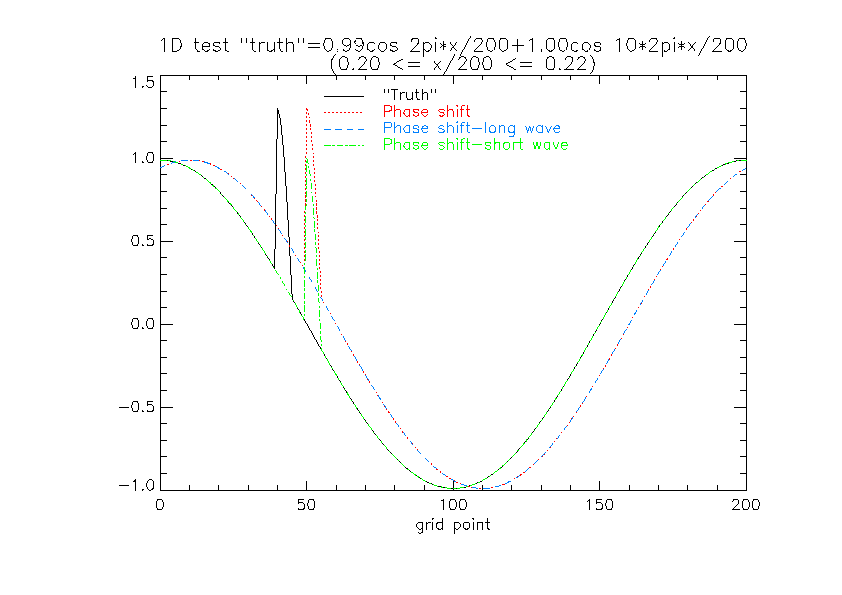
The double penalty affects both the high-resolution forecasts,
whereas only a single penalty (in addition to the long wave phase
error) applies to the (displaced) long wave forecast.
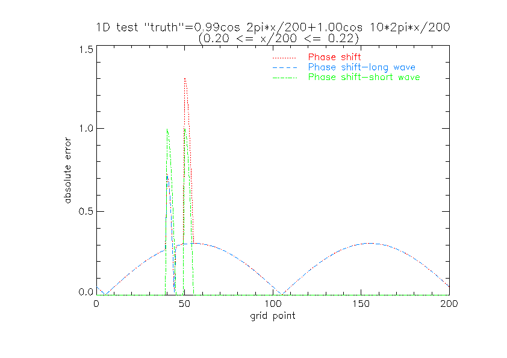
The RMS errors for displacements greater than ~1/5 short wavelength
are smaller for the low resolution "model" than for the two
forecasts which have the short wave feature. It is only for small
positional errors that these have smaller rms errors and larger
correlation with the "truth".
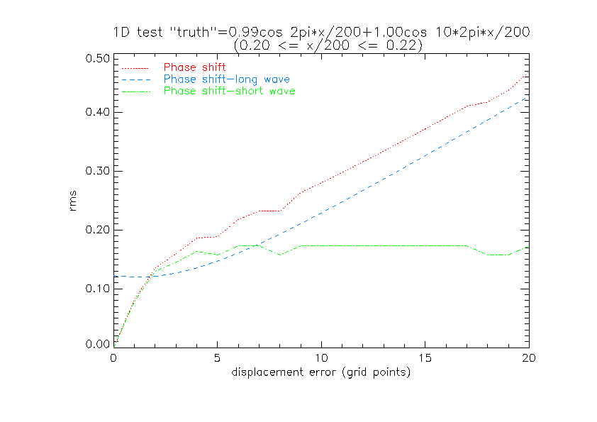
This shows that higher resolution models which have the capability
of retaining and forecasting sharper and smaller scale features can
verify worse (in a pointwise sense) than coarser models which are
less well able to resolve such features. If the cause of the phase
displacement is a general positional error of the larger scale
structures (e.g., a cyclone track/speed error due to an inadequate
initial analysis) which also translates the smaller scale feature,
the higher resolution model will be rather unjustly judged
inaccurate. On the other hand, the better resolution model
potentially may have smaller phase errors at larger scales and a
better-resolved initial analysis with smaller location errors so
that the double penalty is less influential on the overall RMS
error. It may also have higher correlation than the smoother low
resolution model.
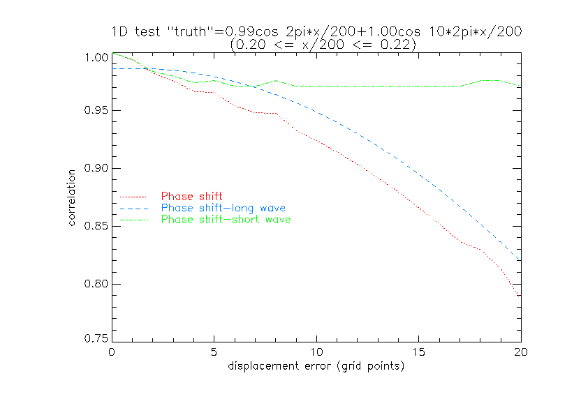
An alternative to the traditional RMS error, especially when
assessing rainfall features. is to use some sort of coherent
pattern based scheme, decomposing the error into amplitude,
displacement and structural error (e.g., Hoffmann et al., 1995;
Ebert and McBride, 2000).
Double penalty (categorical case)
When models resolve ever smaller scales, e.g., mesoscale precipitation variability instead of 'big blobs of rain', the risk of a double penalty rises as will be illustrated with an extreme example in the following discussion.
Fig. (a) shows the observed rain in a grid box (e.g., upscaled gauge observations or radar), (b) a forecast from a high resolution model, and (c) could be a low resolution model forecast or a high resolution forecast which is very smooth (i.e., spreads the rain over a large area, such as 4 grid boxes). Note that the total area rainfall is the same in all cases (otherwise the interpretation would be even more complex).
(a) (b)
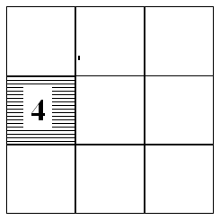
(c)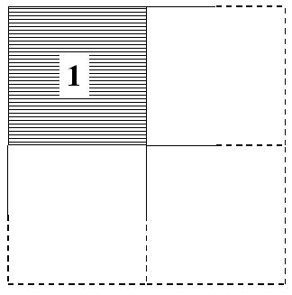
Now, the double penalty means that forecast (b) is
penalised twice for not getting the rain at exactly the right place
(miss) and producing rain at just the wrong place (false alarm),
whereas forecast (c) makes one hit and is only once penalised for
issuing false alarms (albeit 3 of them). Various measures for this
extreme example are summarised in the table below.
| measure |
Case (b)
threshold 1 mm (4 mm) |
Case (c)
threshold 1 mm (4 mm) |
| # hits | 0 (0) |
1 (0) |
| # false alarms | 1 (1) |
3 (0) |
| # misses | 1 (1) |
0 (1) |
| # correct rejections | 7 (7) |
5 (8) |
| Frequency bias | 1 (1) |
4 (0) |
| Hit rate | 0 |
1 (0) |
| False alarm rate | 0.125 (0.125) |
0.375 (0) |
| Equitable threat score | -0.06 (-0.06) |
0.16 (0) |
This shows that there is not simply a double penalty
but that case (b) and (c) have different advantages and
disadvantages. Most clearly, case (c) seems to have higher skill
according to hit rate and equitable threat score and false alarm
rate for the 4 mm threshold, but less accuracy according to the
false alarm rate for the lower threshold. On the other hand, case
(c) has a terrible bias in both cases, and additionally the bias
switches orientation from lower to higher threshold. Thus it is
clear that one has to look at more than one measure, indeed at
least at two independent ones, because the 2*2 contingency table
has 2 degrees of freedom when the observations are given.
So, what is better? It depends.
From a model development point of view case (b) is probably better since the frequency distribution of rain of the forecast is perfect and thus the energetics of the model could be more 'healthy' than in case (c) where there is much too much light rain and no heavy rain. This might have all sorts of causes (too much cloud, weak widespread ascent, too much diffusion, etc.) and lead to all sorts of effects (too widespread latent heat release, widespread wet soil, etc.).
From a customer point of view it depends again. For instance, some customers might complain in case (c) to have no indication of heavy rain at all, whereas they might be reasonably happy with case (b) if they put up with small placement errors. More importantly, it depends on the cost/loss ratio of the specific customer. If the loss is high for a customer who misses an event case (c) is better for light rain; if the costs are high for a customer who experiences a false alarm case (b) is better for light rain but case (c) is better for heavy rain.
There is another statistical argument in favour of case (b),
which is that this model has just missed the event spatially in
this weather situation, but it has the potential to develop heavy
rain and might thus hit in another situation, whereas the model in
case (c) might never be able to produce heavy rain and thus will
always miss heavy events
Why considering RMS error alone may be misleading (or how to "cheat" with smoother forecasts )
The changes to RMS errors in going from a very smooth model to a model with a more realistic variability can be better understood by using the mean square error (MSE) and decomposing as in Murphy and Epstein (1989). Here we compare a forecast f against a reference r (either a model analysis or observation) using the MSE (E'2):
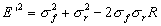
where the RMS error (E') is defined by:
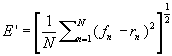
and the second and third terms are the forecast and analysed (reference) variances, and the final term is the covariance of forecast and analysed (reference) fields. This covariance term has been written as the product of forecast and analysed standard deviations and the correlation coefficient R between forecast and analysis fields (note: this is not the anomaly correlation, but the standard spearman correlation).
This expression does not include the bias or mean error. This can be added to the above expression to give us the total MSE for a forecast:
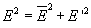
The statistical averaging operator above can be either over a spatial domain (e.g. NH, SH) at a given time, at a point but measured over the time domain, or both spatially and temporally averaged.
For a perfect forecasting system we require that the forecast
variance equals the analysed/observed variance and the bias is
zero. The correlation/covariance term measures the phase error in
the forecast patterns irrespective of the errors in forecast
amplitude. If we neglect the bias then the error variance (random
component) has a simple geometric interpretation shown below (taken
from Taylor (2001), p. 7184).
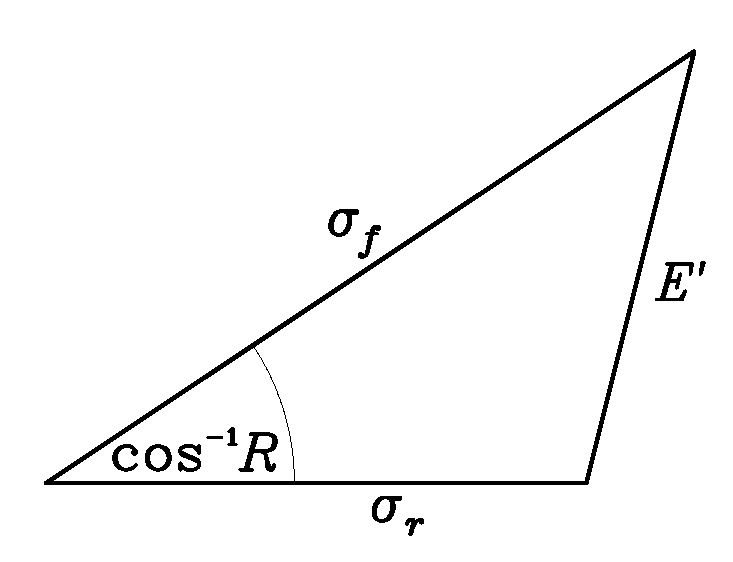
Figure 1: Geometric relationship between the correlation
coefficient, R, the pattern RMS error, E', and
the standard deviations, sf and
sr, of the test and reference fields,
respectively.
We can decrease the RMS error (E') by:
However a simple examination of the diagram shows that a minimum in RMSE (for a given R) is actually achieved by a line 2 (see above) which is the perpendicular from the line of constant correlation to the analysed standard deviation. For this scenario the forecast standard deviation is less than the analysed standard deviation. The RMS error can in fact be reduced for the range of forecast standard deviations between the intersections of lines 1 and 2 with the forecast standard deviation line. This is the process of "hedging" where we can improve our score, RMS error in this case, by smoothing our forecast. If we continue to reduce the forecast standard deviation beyond that given by line 2 we see that the RMS error increases again. It is also interesting that for large correlations (small angles cos-1R), the scope for hedging is much reduced as lines 1 and 2 become very close together.
Mathematically, the above discussion can be summarised by minimising E' with respect to the forecasted standard deviation:
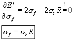
Thus, if one looks solely at the RMS error, then the optimal
strategy is to reduce the variability of the forecast relative to
the observations by (1-R)*100%.
Acknowledgements
We wish to thank Sean Milton and Ian Culverwell for many helpful discussions and contributions.
Recommendations
Ebert, E.E. and J.L. McBride, 2000: Verification of precipitation in weather systems: Determination of systematic errors. J. Hydrology, 239, 179-202.
Hoffman, R.N., Z. Liu, J.-F. Louis, and C. Grassotti, 1995: Distortion representation of forecast errors. Mon. Wea. Rev., 123, 2758-2770.
Murphy, A.H. and Epstein, E.S., 1989: Skill scores and correlation coefficients in model verification. Mon. Wea. Rev., 117, 572-581.
Taylor, K.E., 2001: Summarizing multiple aspects of model performance in a single diagram. J. Geophys. Res., D7, 106, 7183-7192.